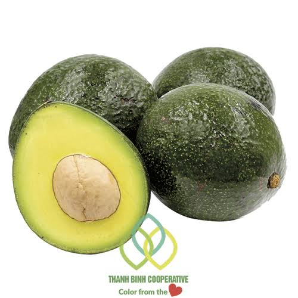

Cà phê Buôn Ma Thuột
Đậm đà hương vị núi rừng, 100% hạt Robusta chọn lọc kỹ lưỡng.
150.000 VNĐ
Thưởng thức trọn vẹn hương vị tự nhiên, nguyên bản đến từ vùng đất đỏ bazan mỡ màng và đầy nắng gió.
Xem sản phẩm ngay
Đậm đà hương vị núi rừng, 100% hạt Robusta chọn lọc kỹ lưỡng.
150.000 VNĐ

Mật ong hoa rừng tự nhiên, màu vàng sánh mịn, thơm ngọt thanh nhẹ.
190.000 VNĐ




Tây Nguyên không chỉ nổi tiếng với những dòng sông hung vĩ, bản hùng ca trường đao mà còn là cái nôi của những nông sản danh tiếng thế giới. Với độ cao trên 500m so với mặt nước biển cùng chất đất đỏ bazan màu mỡ, sản phẩm vùng đất nơi đây mang hương vị đậm đà rất đặc trưng.
100% nguồn gốc rõ ràng, thu hoạch trực tiếp từ các trang trại tại Đắk Lắk, Đắk Nông, Gia Lai.
Không chứa chất bảo quản hóa học, bảo lưu trọn vẹn hương vị và dưỡng chất ban đầu.